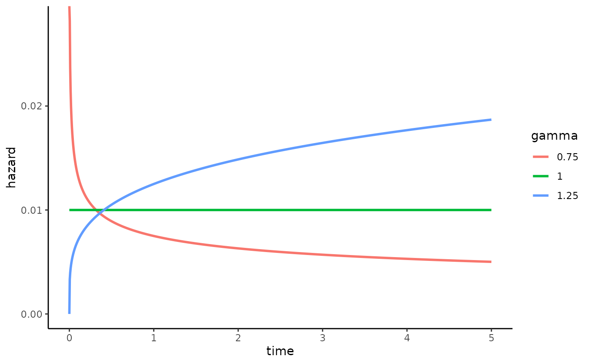
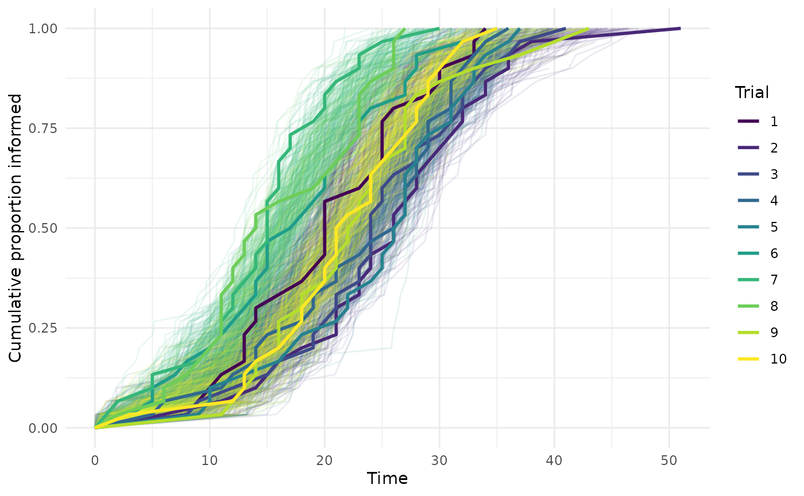

Weibull shaped hazards
weibull_shaped_hazards.RmdThis vignette uses the simulation code from the power analysis
vignette to explore Weibull shaped hazards. The standard NBDA assumes a
constant intrinsic rate, although we might instead assume that intrinsic
rates increase or decrease over time. For example, if you are studying
the discovery of a novel food patch, as that food patch becomes
depleted, it reduces in size, and becomes more difficult to locate, and
we might expect the hazard to diminish over time. There are many ways to
formulate a variable baseline: Hoppitt,
Kandler, Kendal & Laland (2010) introduced a gamma distributed
hazard, and Hoppitt
& Laland, 2013 write that another option would be a Weibull
shaped hazard. Weibull shaped hazards are commonly found in survival
analyses, and given that there is no a priori reason to prefer one
approach over another, is what has been implemented in STbayes. Fitting
a model with a Weibull distributed hazard can be done by calling
generate_STb_model(..., intrinsic_rate="weibull"). This
introduces a shape parameter
to the model. A value of
indicates that the rate decreases over time,
indicates a constant hazard, and
indicates an increasing hazard.
The plot below shows how gamma affects the instantaneous hazard over time:
lambda <- 0.01
gammas <- c(0.75, 1, 1.25)
t <- seq(0, 5, length.out = 1000)
df <- do.call(rbind, lapply(gammas, function(gamma) {
data.frame(
time = t,
hazard = lambda * gamma * t^(gamma - 1),
gamma = factor(gamma)
)
}))
ggplot(df, aes(time, hazard, colour = gamma)) +
geom_line(linewidth = 1) +
labs(
x = "time",
y = "hazard",
colour = "gamma"
) +
theme_classic()
We can define a the simulation function that includes a Weibull shaped hazard when calculating learning rates:
diffusion_trial <- function(trial_num, obs_duration, g, parameter_values) {
results <- data.frame(id = 1:N, time = obs_duration + 1, t_end = obs_duration, trial = trial_num)
for (t in 1:obs_duration) {
informed <- results[results$time <= obs_duration, "id"]
potential_learners <- c(1:N)
potential_learners <- potential_learners[!(potential_learners %in% informed)]
if (length(potential_learners) == 0) {
results$t_end <- t - 1 # minus 1 so t_end=last learner
break
}
# calculate the hazard for potential learners
learning_rates <- sapply(potential_learners, function(x) {
neighbors <- neighbors(g, x)
C <- sum(neighbors$name %in% informed)
lambda <- parameter_values[parameter_values$id == x, "lambda_0"] +
(parameter_values[parameter_values$id == x, "s_prime"] * C)
# Weibull goes here vvv
lambda <- lambda * parameter_values[parameter_values$id == x, "gamma"] * t^(parameter_values[parameter_values$id == x, "gamma"] - 1)
return(lambda)
})
learning_probs <- 1 - exp(-learning_rates)
learners_this_step <- rbinom(n = length(potential_learners), size = 1, prob = learning_probs)
new_learners <- potential_learners[learners_this_step == 1]
results[results$id %in% new_learners, "time"] <- t
}
return(results)
}As before, we embed this function in a larger one that lets us run many trials:
run_sims <- function(num_trials, obs_duration, parameter_values, N, k) {
# storage for all trials
all_event_data <- data.frame(
id = integer(),
time = numeric(),
t_end = numeric(),
trial = integer()
)
all_edge_list <- data.frame(
focal = integer(),
other = integer(),
trial = integer(),
assoc = numeric()
)
for (trial in 1:num_trials) {
# create random regular graph
g <- sample_k_regular(N, k, directed = FALSE, multiple = FALSE)
V(g)$name <- 1:N
results = diffusion_trial(trial, obs_duration, g, parameter_values)
# create event + network data and append to cumulative dataframes
event_data <- results %>%
arrange(time)
all_event_data <- rbind(all_event_data, event_data)
edge_list <- as.data.frame(as_edgelist(g))
names(edge_list) <- c("focal", "other")
edge_list$trial <- trial
edge_list$assoc <- 1 # assign e_ij=1 since this is just an edge list
all_edge_list <- rbind(all_edge_list, edge_list)
message("Trial", trial, "completed.\n")
}
# package up data into list and return it
final_results <- list(
"event_data" = all_event_data,
"networks" = all_edge_list
)
return(final_results)
}We define our parameters:
set.seed(456)
# Parameters
N <- 30 # population size
k <- 5 # degree
log_lambda_0 <- -6
log_sprime <- -4
gamma <- 1.25 # hazard will increase with time
obs_duration <- 1000
num_trials <- 10
#learning parameters
parameter_values <- data.frame(
id = 1:N,
lambda_0 = exp(log_lambda_0),
s_prime = exp(log_sprime),
gamma = gamma
)
parameter_values$s = parameter_values$s_prime/parameter_values$lambda_0Now, we can run the simulations:
results <- run_sims(num_trials, obs_duration, parameter_values, N, k)
#> Trial1completed.
#> Trial2completed.
#> Trial3completed.
#> Trial4completed.
#> Trial5completed.
#> Trial6completed.
#> Trial7completed.
#> Trial8completed.
#> Trial9completed.
#> Trial10completed.Now that we have our results, we can feed these into STbayes and fit models to them. Let’s test that we correctly support the social transmission model over the asocial constrained model:
# import data
data_list <- import_user_STb(
event_data = results[["event_data"]],
networks = results[["networks"]]
)
#> User supplied edge weights as point estimates 📍
#> No ILV supplied.
#> User input indicates static network(s). If dynamic, include 'time' column.
#> ░▒▓█►─═ Sanity check ═─◄█▓▒░
#> User provided data about:
#> 30 individuals across 10 independent diffusions (trials).
#> 30 of 30 individuals learned in trial 1
#> 30 of 30 individuals learned in trial 2
#> 30 of 30 individuals learned in trial 3
#> 30 of 30 individuals learned in trial 4
#> 30 of 30 individuals learned in trial 5
#> 30 of 30 individuals learned in trial 6
#> 30 of 30 individuals learned in trial 7
#> 30 of 30 individuals learned in trial 8
#> 30 of 30 individuals learned in trial 9
#> 30 of 30 individuals learned in trial 10
#> User supplied 1 networks: assoc
#> ILV for asocial learning: ILVabsent
#> ILV for social learning: ILVabsent
#> multiplicative model ILV: ILVabsent
#> 🤔 Does that seem right to you?
# fit full model
model_full <- generate_STb_model(data_list,
est_acqTime = T,
intrinsic_rate = "weibull")
#> Creating cTADA type model with the following default priors:
#> log_lambda0 ~ normal(-4, 2)
#> log_sprime ~ normal(-4, 2)
#> beta_ILV ~ normal(0,1)
#> log_f ~ normal(0,1)
#> k_raw ~ normal(0,3)
#> z_veff ~ normal(0,1)
#> sigma_veff ~ normal(0,1)
#> rho_veff ~ lkj_corr_cholesky(3)
#> gamma ~ normal(0,.5)Hopefully, you’ll find that STbayes can recover the value of gamma. You can play around to convince yourself that it does a good job. Of course if gamma is too large, there won’t be enough variation for inference, and if gamma is too small, not enough agents will learn during the allotted time, and you’ll need to increase max timesteps in the simulations.
fit_full <- fit_STb(data_list, model_full)
#> Detected N_veff = 0
#> ⏳ Sampling...
#> Running MCMC with 1 chain...
#>
#> Chain 1 Iteration: 1 / 1000 [ 0%] (Warmup)
#> Chain 1 Iteration: 100 / 1000 [ 10%] (Warmup)
#> Chain 1 Iteration: 200 / 1000 [ 20%] (Warmup)
#> Chain 1 Iteration: 300 / 1000 [ 30%] (Warmup)
#> Chain 1 Iteration: 400 / 1000 [ 40%] (Warmup)
#> Chain 1 Iteration: 500 / 1000 [ 50%] (Warmup)
#> Chain 1 Iteration: 501 / 1000 [ 50%] (Sampling)
#> Chain 1 Iteration: 600 / 1000 [ 60%] (Sampling)
#> Chain 1 Iteration: 700 / 1000 [ 70%] (Sampling)
#> Chain 1 Iteration: 800 / 1000 [ 80%] (Sampling)
#> Chain 1 Iteration: 900 / 1000 [ 90%] (Sampling)
#> Chain 1 Iteration: 1000 / 1000 [100%] (Sampling)
#> Chain 1 finished in 28.8 seconds.
#> 🫴 Use STb_save() to save the fit and chain csvs to a single RDS file. Or don't!
STb_summary(fit_full)
#> Parameter Median MAD CI_Lower CI_Upper ess_bulk ess_tail Rhat
#> 1 log_lambda_0_mean -5.849 0.333 -6.687 -5.149 104.796 74.677 1.021
#> 2 log_s_prime_mean -4.108 0.484 -5.363 -3.371 99.751 51.181 1.012
#> 4 lambda_0 0.003 0.001 0.001 0.005 104.796 74.677 1.016
#> 6 s 5.597 1.659 2.794 8.902 158.266 128.870 1.010
#> 7 percent_ST[1] 0.853 0.020 0.808 0.882 158.268 128.870 1.018
#> 3 log_gamma 0.236 0.089 0.065 0.444 99.351 51.181 1.014
#> 5 gamma 1.267 0.115 1.068 1.559 99.350 51.181 1.014Just to be sure, let’s plot out the posterior predictive check, as in the Getting Started vignette:
# we need to store num inds per trial to refer to later
event_data <- results$event_data %>%
group_by(trial) %>%
mutate(n_trial = n())
# create cumulative proportion dataframe
plot_data_obs <- event_data %>%
filter(time <= t_end) %>% # exclude censored (time > t_end)
group_by(trial) %>%
arrange(time, .by_group = TRUE) %>%
mutate(
cum_prop = row_number() / n_trial, # denominator needs to be the number of individuals per trial
type = "observed"
) %>%
select(trial, time, cum_prop, type) %>%
ungroup()
# add in 0,0 starting point for diffusions w/o demonstrators
starting_points <- plot_data_obs %>%
distinct(trial) %>%
anti_join(
plot_data_obs %>% filter(time == 0) %>% distinct(trial),
by = "trial"
) %>%
mutate(time = 0, cum_prop = 0, type = "observed")
plot_data_obs <- bind_rows(plot_data_obs, starting_points) %>%
arrange(trial, time)
draws_df <- as_draws_df(fit_full$draws(variables = "acquisition_time", inc_warmup = FALSE))
# pivot longer
ppc_long <- draws_df %>%
select(starts_with("acquisition_time[")) %>%
pivot_longer(
cols = everything(),
names_to = c("trial", "ind"),
names_pattern = "acquisition_time\\[(\\d+),(\\d+)\\]",
values_to = "time"
) %>%
mutate(
trial = as.integer(trial),
ind = as.integer(ind),
draw = rep(1:(nrow(draws_df)),
each = length(unique(.$trial)) * length(unique(.$ind)))
)
# thin sample for plotting
sample_idx <- sample(c(1:max(ppc_long$draw)), 100)
ppc_long <- ppc_long %>% filter(draw %in% sample_idx)
# same as before, we need a way to reference the number of individuals in each trial
ppc_long <- ppc_long %>%
group_by(draw, trial) %>%
mutate(n_trial = n())
# we also need to remove individuals predicted as censored, which
# have value of -1 in predicted data
ppc_long <- ppc_long %>%
filter(time > -1)
# build cumulative curves per draw
plot_data_ppc <- ppc_long %>%
group_by(draw, trial, time) %>%
summarise(n = n(), n_trial = first(n_trial), .groups = "drop") %>%
group_by(draw, trial) %>%
arrange(time) %>%
mutate(cum_prop = cumsum(n) / n_trial)
# add in 0,0 starting point when no demos, similar to above
starting_points_ppc <- plot_data_ppc %>%
distinct(trial, draw) %>%
anti_join(
plot_data_ppc %>%
filter(time == 0) %>%
distinct(trial, draw),
by = c("trial", "draw")
) %>%
mutate(time = 0, cum_prop = 0, type = "ppc")
plot_data_ppc <- bind_rows(plot_data_ppc, starting_points_ppc) %>%
arrange(trial, draw, time)
# plot it w diff colored lines for different trials.
ggplot() +
geom_line(data = plot_data_ppc,
aes(x = time, y = cum_prop,
group = interaction(draw, trial), color = as.factor(trial)), alpha = .1) +
geom_line(data = plot_data_obs, aes(x = time, y = cum_prop,
color = as.factor(trial)), linewidth = 1) +
scale_color_viridis_d() +
labs(x = "Time", y = "Cumulative proportion informed", color = "Trial") +
theme_minimal()